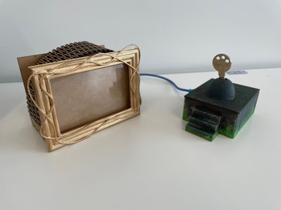

・最終的に作ったもの：「音がなるキースタンド」
・仕組み：キースタンドに鍵を指すと写真立ての裏にあるスピーカーから音声が流れる。
・ねらい：一人ぐらいの寂しさを解消する。（一人暮らしを明るくする）
・プレゼンの資料：
最終プロジェクトPP

・Arudinoのソースコード（ファミマ）
- int val=0;
- int from_pc='0';
- #define BEATTIME 310
- #define PIN 11
-
- #define LA 880
- #define FA 740
- #define MI 659
- #define RE 587
- #define DLA 440
- void setup() {
- pinMode(11,OUTPUT);
- Serial.begin(9600);
- }
- void loop(){
-
- if(Serial.available() > 0){
- from_pc = Serial.read();
- }
- //１が送られてきたらLEDを点灯、0だったら消灯
- if (from_pc=='1'){
- pinMode(11,HIGH);
- //ファ#レラレミララミファ#ミラレ
- tone(PIN,FA,BEATTIME) ; // ファ#
- delay(BEATTIME) ;
- tone(PIN,RE,BEATTIME) ; // レ
- delay(BEATTIME) ;
- tone(PIN,DLA,BEATTIME) ; // dラ
- delay(BEATTIME) ;
- tone(PIN,RE,BEATTIME) ; // レ
- delay(BEATTIME) ;
- tone(PIN,MI,BEATTIME) ; // ミ
- delay(BEATTIME) ;
- tone(PIN,LA,BEATTIME) ; // ラ
- delay(BEATTIME*2) ;
- tone(PIN,DLA,BEATTIME) ; // dラ
- delay(BEATTIME) ;
- tone(PIN,MI,BEATTIME) ; // ミ
- delay(BEATTIME) ;
- tone(PIN,FA,BEATTIME) ; // ファ#
- delay(BEATTIME) ;
- tone(PIN,MI,BEATTIME) ; // ミ
- delay(BEATTIME) ;
- tone(PIN,DLA,BEATTIME) ; // dラ
- delay(BEATTIME) ;
- tone(PIN,RE,BEATTIME) ; // レ
- delay(BEATTIME) ;
-
- // exit the loop
- exit(0); //0 is required to prevent error.
- }
- else if (from_pc=='0'){
- pinMode(11,LOW);
- }
-
- delay(5000);
- }
・Arudinoのソースコード（明るさセンサー）
- void setup() {
- // put your setup code here, to run once:
- Serial.begin(9600);
- }
- void loop() {
- // put your main code here, to run repeatedly:
- int val=0;
- val=analogRead(1);
- Serial.println(val);
- delay(500);
- }
■感想
今回のプロジェクトでは当初制作を予定していた製品が作れなくて悔しかった。
私たちが元々作ろうとしていたものは家族の「おかえり」という声が聞こえてくるというものであったが、音声ファイルを上手くプログラムに組み込むことが出来ず失敗してしまった。
今の自分たちでは解決できなかったことがとても悔しかった。
結果的にはこの失敗から製品の方向性を変えて製品を完成まで持っていけたのは良かったと思う。
プロジェクトを進めていくうえで主となるプランだけでなく、第二、第三のプランを考えておくことで失敗しても臨機応変に対応できることが学べた。
また、今回の最終プロジェクトではチームで一つのことを進めていくという難しさを痛感した。
班員それぞれに意見や考えがあり、それをすり合わせて方向性を決めることに苦労した。
実際、私たちの班は班の中で対立してしまった時期もあったが、話し合いを重ねていくことで方向性をすり合わせ、最終的には班としてまとまり一つの作品を作ることができた。
チームとして一つのプロジェクトを進めていくにはチームメイトの考えや意見をすり合わせて方向性を同じにすることが大切であり、そうするためには話し合うことが大切だと感じた。
この経験は将来、絶対に生きてくるものであり、このような経験をさせてくれた先生や班員には感謝しかない。